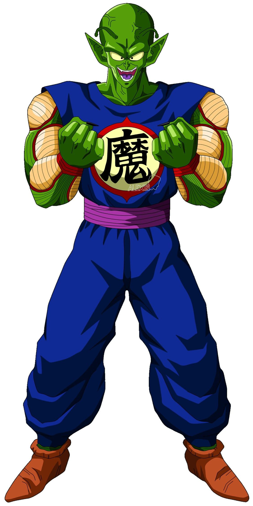
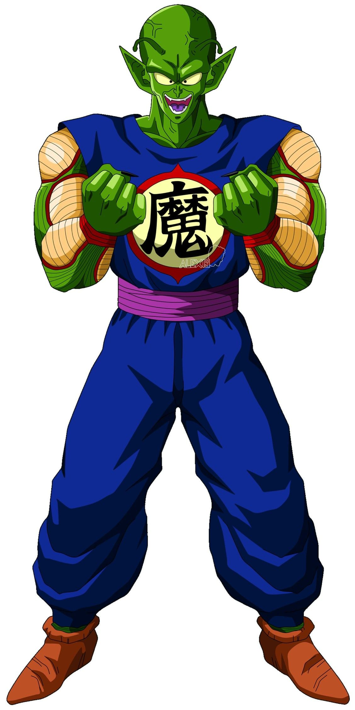

Piccolo (ピッコロ, Pikkoro, Piccolo en namekiano.png en idioma namekiano) o Piccolo Jr. (ピッコロ・ジュニア, Pikkoro Junia), también conocido bajo el seudónimo de Ma Junior (マジュニア, Ma Junia), es uno de los personajes principales que aparece en el manga y anime de Dragon Ball y sus correspondientes secuelas. Es un namekiano que surgió tras ser creado en los últimos momentos de vida de su padre, siendo su actual reencarnación. Aunque en un principio fue el archienemigo de Son Goku, con el paso del tiempo fue haciéndose menos malvado hasta finalmente convertirse en un ser bondadoso y miembro de los Guerreros Z. A través del tiempo, también comenzó a tomarle cariño a su discípulo Son Gohan, a quien veía como una especie de "vástago" y formando un lazo de amistad con este.